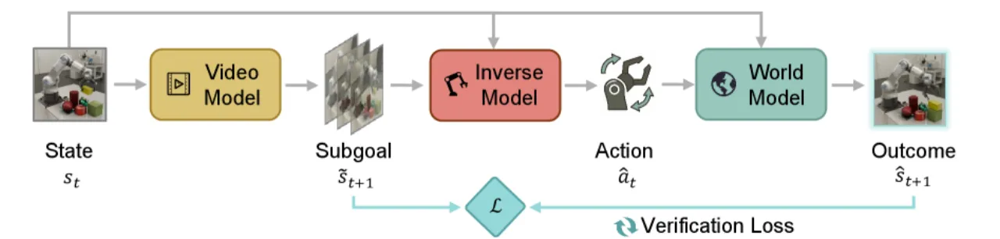
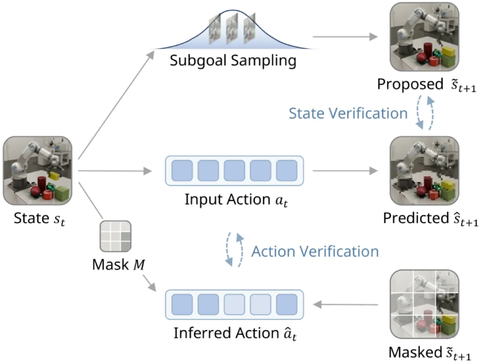
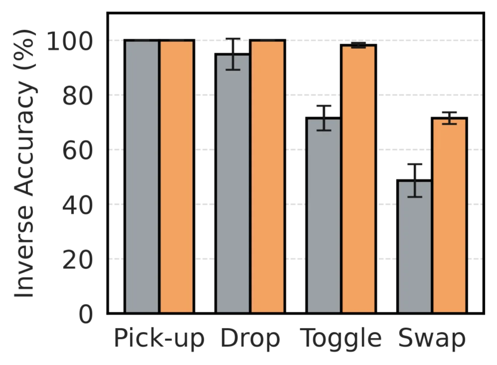
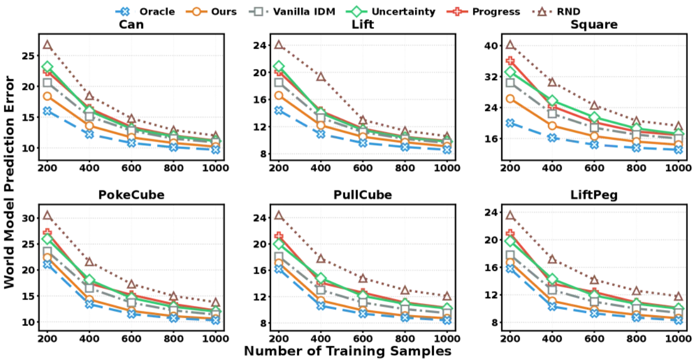
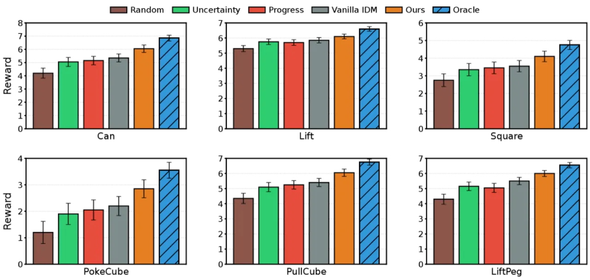
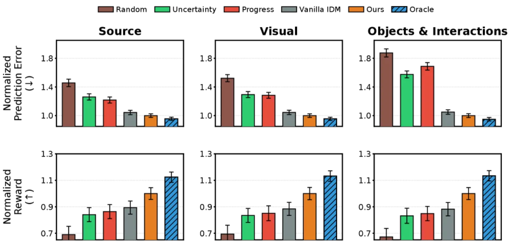
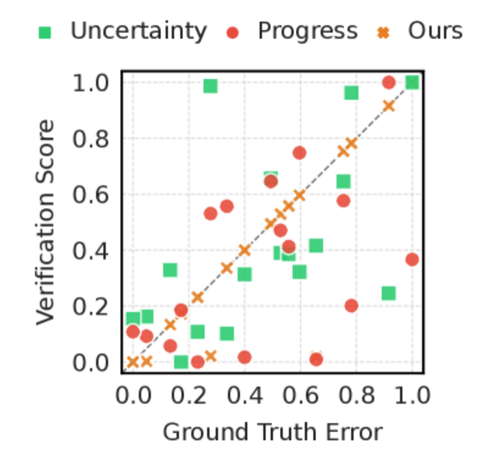

通用世界模型（world model）承诺可用于策略评估、优化与规划，但在多样动作分布下保持鲁棒性仍极具挑战。WAV 将动作条件预测分解为"状态合理性（state plausibility）"与"动作可达性（action reachability）"两个可独立验证的因子，通过前向-逆向循环一致性（cycle consistency）自动发现模型预测误差并引导高效探索，无需额外标注。
通用世界模型要在策略学习中发挥作用，必须在包括次优动作和探索性动作在内的多样动作分布下稳定准确地预测结果。然而，现有方法在探索不足的状态区域难以识别哪些 transition 最具信息量，验证（verification）机制的缺失导致模型在分布外（OOD）场景下显著退化。
"General-purpose world models promise scalable policy evaluation, optimization, and planning, yet achieving the required level of robustness remains challenging."

核心洞察：已知起止状态时，推断引发合理 transition 的动作（逆问题）往往比直接预测状态转移结果（前向问题）更容易。这种不对称性来源于：① 无动作视频数据远比带动作的交互数据丰富；② 动作相关特征的维度 d_z 远小于完整状态维度 d_s。WAV 正是利用这一不对称性构建高效的预测验证机制。
WAV 框架由三个模块组成，通过前向-逆向循环一致性进行自我验证：子目标生成器 g_ϕ、稀疏逆动力学模型 h_ψ、以及前向世界模型 f_θ。验证分数衡量前向预测与子目标之间的偏差，高分样本优先被选入训练集以引导探索。

子目标生成器 g_ϕ 建模状态转移先验分布 p(st+1|st)，同时在有动作标注的机器人交互数据和规模更大的无动作视频数据上训练。对给定当前状态 st，它采样 K 个合理未来状态 {s̃kt+1}，这些候选子目标不依赖动作，天然具有视觉合理性（state plausibility）。
稀疏 IDM 引入可学习稀疏掩码 M，仅利用与动作相关的紧凑特征子集推断动作：
at = h_ψ(M ⊙ st, M ⊙ st+1)
"Sparse" 的含义是：模型只关注对动作预测贡献最大的少数状态维度 z（d_z ≪ d_s），从而降低输入维度、提升样本效率与对环境噪声的鲁棒性。
验证循环按以下顺序执行：
st → g_ϕ → s̃kt+1 → h_ψ → âkt → f_θ → ŝkt+1 → ℓ → ε̂k
偏差 ε̂k 衡量前向世界模型的预测与子目标生成器给出的"合理未来"之间的不一致程度，验证分数高（偏差大）的样本优先被加入训练集，引导世界模型在高误差区域自我提升。
在线性-高斯设定下，若两个模型均用 OLS 在 n 个带标注转移上拟合，当 n > d_s + d_a + 1 且 n > 2d_z + 1 时，前向误差与逆向误差之比满足：
𝔼[ℰF] / 𝔼[ℰI] ≥ （维度比）× （随机性比）× （样本量项）
即：[(d_s+d_a)/(2d_z) · (d_s/d_a)] · [(σ_s/(λσ_a))²] · [(n−2d_z−1)/(n−(d_s+d_a)−1)]
三个因子分别对应维度不对称（d_z ≪ d_s 时逆向问题更简单）、随机性差异（环境噪声 σ_s 比动作恢复歧义 σ_a 更难克服）、以及有限样本稳定性（参数少时估计更准）。
在三个平台（MiniGrid、RoboMimic、ManiSkill）共 9 个任务上评测：MiniGrid 用于验证核心验证机制的鲁棒性，RoboMimic（Lift、Can、Square）与 ManiSkill（PullCube、PokeCube、LiftPeg）评测真实机器人场景的世界模型学习与 OOD 适应能力。基线包括 Random、Uncertainty（最高认知不确定性）、Progress（连续世界模型间的分歧）、Vanilla IDM（无稀疏掩码）及 Oracle（上界）。





对比 WAV 与 Vanilla IDM（去掉稀疏掩码 M）的结果表明，稀疏性是关键：去掉掩码后模型需要从完整状态维度推断动作，既降低了样本效率又对环境噪声更为敏感。在 MiniGrid 上，随对象数量从 6 增加到 14，Sparse IDM 的验证精度基本稳定，而稠密前向模型的精度显著下降，验证了维度不对称理论分析的预测。
| 平台 / 指标 | Random (基线) | 最优竞争方法 | WAV | 提升 |
|---|---|---|---|---|
| 采样效率（达到同等 MSE 所需样本） | 1× | ~1.5× | 2× | +33% |
| 下游策略奖励（RoboMimic OOD） | — | 次优基线 | +22% | >22% |
| 验证分数 Spearman 相关（RoboMimic） | ~0 | 低 | 高单调对齐 | — |
子目标生成器可以利用大规模无动作视频预训练，但稀疏 IDM 本身需要带动作标注的交互数据才能训练，这限制了在动作标注极度稀缺的场景下的可扩展性。若无动作视频数据相对于带标注数据占比持续扩大，IDM 部分将成为瓶颈。
Proposition 3.1 在线性高斯框架下推导；论文在附录 F.2 中明确标注 "Scope of the stylized model"，说明该理论结论对于高度非线性的视觉状态空间与复杂动力学系统的适用边界有待进一步研究。
论文指出，若动作恢复的单射性（injectivity）弱（即多个动作均能产生相似 transition），逆向验证的精度会下降；若 OOD 偏移反向传播到验证组件本身，方法也可能退化。这意味着 WAV 在动作空间连续且高度冗余的任务上效果可能不稳定。
WAV 的优势部分来自"无动作视频数据远比带标注数据丰富"这一前提假设。在专有工业场景或新型机器人平台中，大规模相关视频可能并不存在，此时子目标生成器的泛化能力及整体框架的优势可能受到限制。